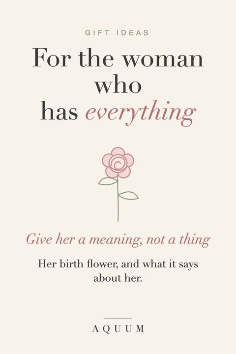

Gifts for the Woman Who Has Everything: Give Her a Meaning, Not a Thing
2026-09-30
Written by the team behind Aquum, a small birth flower gift shop. How we make money.

She already has the candles, the robe, the good coffee maker. When you ask what she wants, she says "nothing, really," and she means it.
The answer isn't a better thing. It's a gift she couldn't have bought for herself, because it's about her.
Give her a meaning
Every birth month has a flower with a meaning. Most people have never been told theirs. Giving her her own flower, and what it says about her, is a gift nobody else on her list will think of.
Find her month in what is my birth flower. A few that suit a woman who has everything:
- June · Rose: love in all its forms. For the person who already has everything, the one thing that fits.
- August · Gladiolus: strength of character.
- October · Marigold: warmth that stays.
- December · Paperwhite: good wishes for what's ahead.
Small gifts she'll actually use
- A soft shirt with her flower for weekends at home.
- A mug for the morning coffee she won't give up.
- A framed print of her flower, with its meaning, for a spot she sees every day. Our free printable chart is a good start.
- Bulbs or seeds of her flower if she gardens.
Or give her time
- A plan, not a package: a lunch, a museum, a walk somewhere new, written into the card.
- An hour of something she never makes time for, with you taking care of the rest.
The card matters more than the gift
"Your flower is the gladiolus. It stands for strength of character. I can't think of anyone it fits better."
For more ideas by person, see our meaningful Christmas gifts for her.
Looking for a birth flower gift? See the botanical tees at Aquum, one flower for every month.